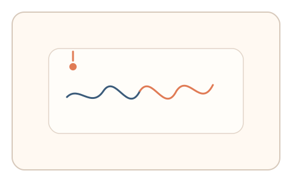

#114
Morphological Analysis - Combination Batches
已扩展
环境噪声对齐
短时间采集环境噪声节律作为参考，异步要求用户按相同节奏完成点击序列，以一致性验证真实性。
概念原文
短时间采集环境噪声节律作为参考，异步要求用户在相同节奏下完成点击序列，系统比较节律一致性。任务结构为异步验证，信号形态为节律序列。
把“现场环境节律”作为不可预录的锚点。
研究背景
现场环境噪声包含不可预录的节律特征，用户在短时记忆内可对齐节奏。脚本难以获取或复刻实时噪声节律，因此具有在场性优势。
核心机制
- 短时间采集环境噪声并提取节律。
- 异步弹出节奏匹配微任务。
- 记录点击节律序列与误差。
- 与环境节律进行一致性比较。
用户流程
- 步骤 1：系统采集环境噪声节律。
- 步骤 2：异步提示用户完成节奏点击。
- 步骤 3：系统比较节律一致性并判定。
判定信号
节律对齐误差
真实用户对现场节奏具有可测的同步能力。
节拍波动
人类同步存在稳定的微抖动。
判定逻辑
对齐误差需落在人类分布区间；过度完美或无关联判异常。
对抗面
- 脚本伪造固定节奏序列
- 重放真实用户的节奏点击
防御与缓解
- 随机化采样窗口与节奏片段
- 绑定音频特征与任务时序
- 叠加反应时与停顿信号
可达性与风险
提供视觉节奏提示与无音频替代任务，避免对听障用户造成排斥。
- 环境噪声过弱导致节律不稳定
- 隐私与录音权限需要明确告知
可视化状态

状态 1：噪声采集
短时间采集环境节律。

状态 2：节奏对齐
异步提示节奏点击。

状态 3：一致判定
比较节律一致性与误差。
参考资料
Rhythm
说明节律感知与同步特征。
Auditory scene analysis
说明环境噪声节律提取基础。